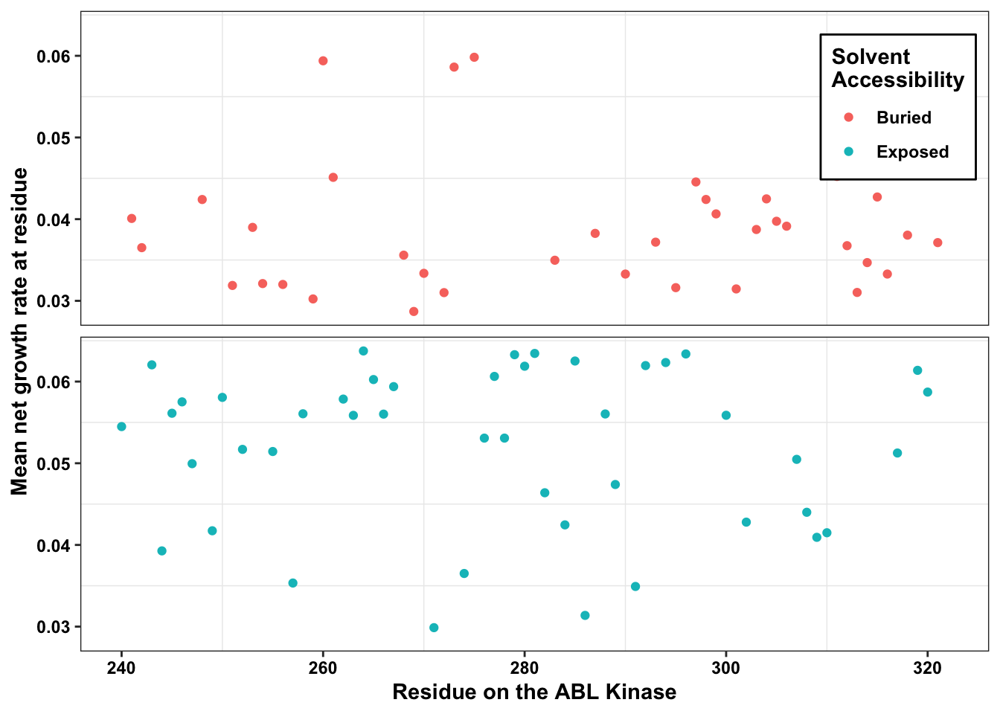

ABL_SM_CRISPR_Cut_Analyses
Haider Inam
2023-03-22
Last updated: 2023-04-02
Checks: 6 1
Knit directory: duplex_sequencing_screen/
This reproducible R Markdown analysis was created with workflowr (version 1.6.2). The Checks tab describes the reproducibility checks that were applied when the results were created. The Past versions tab lists the development history.
The R Markdown file has unstaged changes. To know which version of
the R Markdown file created these results, you’ll want to first commit
it to the Git repo. If you’re still working on the analysis, you can
ignore this warning. When you’re finished, you can run
wflow_publish to commit the R Markdown file and build the
HTML.
Great job! The global environment was empty. Objects defined in the global environment can affect the analysis in your R Markdown file in unknown ways. For reproduciblity it’s best to always run the code in an empty environment.
The command set.seed(20200402) was run prior to running
the code in the R Markdown file. Setting a seed ensures that any results
that rely on randomness, e.g. subsampling or permutations, are
reproducible.
Great job! Recording the operating system, R version, and package versions is critical for reproducibility.
Nice! There were no cached chunks for this analysis, so you can be confident that you successfully produced the results during this run.
Great job! Using relative paths to the files within your workflowr project makes it easier to run your code on other machines.
Great! You are using Git for version control. Tracking code development and connecting the code version to the results is critical for reproducibility.
The results in this page were generated with repository version 88dabff. See the Past versions tab to see a history of the changes made to the R Markdown and HTML files.
Note that you need to be careful to ensure that all relevant files for
the analysis have been committed to Git prior to generating the results
(you can use wflow_publish or
wflow_git_commit). workflowr only checks the R Markdown
file, but you know if there are other scripts or data files that it
depends on. Below is the status of the Git repository when the results
were generated:
Ignored files:
Ignored: .Rhistory
Ignored: .Rproj.user/
Ignored: data/Consensus_Data/.Rhistory
Ignored: data/Consensus_Data/Novogene_lane11/sample1/duplex/duplex_sorted_filtered.tsv.gz
Ignored: data/Consensus_Data/Novogene_lane11/sample1/sscs/sscs_sorted_filtered.tsv.gz
Ignored: data/Consensus_Data/Novogene_lane11/sample2/archive/sscs_aligned_filtered.tsv.gz
Ignored: data/Consensus_Data/Novogene_lane11/sample2/duplex/duplex_sorted_filtered.tsv.gz
Ignored: data/Consensus_Data/Novogene_lane11/sample2/sscs/sscs_sorted_filtered.tsv.gz
Ignored: data/Consensus_Data/Novogene_lane11/sample3/duplex/duplex_sorted_filtered.tsv.gz
Ignored: data/Consensus_Data/Novogene_lane11/sample3/sscs/sscs_sorted_filtered.tsv.gz
Ignored: data/Consensus_Data/Novogene_lane11/sample4/duplex/duplex_sorted_filtered.tsv.gz
Ignored: data/Consensus_Data/Novogene_lane11/sample4/sscs/sscs_sorted_filtered.tsv.gz
Ignored: data/Consensus_Data/Novogene_lane11/sample5/variant_caller_outputs/sscs_L858R_aligned_filtered.tsv.gz
Ignored: data/Consensus_Data/Novogene_lane11/sample5/variant_caller_outputs/sscs_L858R_aligned_filtered_sample5.tsv.gz
Ignored: data/Consensus_Data/Novogene_lane11/sample6/archive/sscs_aligned_filtered.tsv.gz
Ignored: data/Consensus_Data/Novogene_lane11/sample6/sscs_L858R_aligned_filtered.tsv.gz
Ignored: data/Consensus_Data/Novogene_lane11/sample6/variant_caller_outputs/variants_ann_sample6.csv.gz
Ignored: data/Consensus_Data/Novogene_lane11/sample7/sscs/sscs_sorted_filtered.tsv.gz
Ignored: data/Consensus_Data/Novogene_lane12/sample1/low_sscscounts/sscs_aligned_filtered.tsv.gz
Ignored: data/Consensus_Data/Novogene_lane12/sample1/sscs_aligned_filtered.tsv.gz
Ignored: data/Consensus_Data/Novogene_lane12/sample3/sscs_combined_filtered.tsv.gz
Ignored: data/Consensus_Data/Novogene_lane12/sample5/sscs_combined_filtered.tsv.gz
Ignored: data/Consensus_Data/Novogene_lane12/sample7/sscs_combined_filtered.tsv.gz
Ignored: data/Consensus_Data/Novogene_lane12/sample9/sscs_combined_filtered.tsv.gz
Ignored: data/Consensus_Data/Novogene_lane13/sample1/duplex/duplex_sorted_filtered.tsv.gz
Ignored: data/Consensus_Data/Novogene_lane13/sample1/sscs/sscs_sorted_filtered.tsv.gz
Ignored: data/Consensus_Data/Novogene_lane13/sample10/duplex/duplex_sorted_filtered.tsv.gz
Ignored: data/Consensus_Data/Novogene_lane13/sample10/sscs/sscs_sorted_filtered.tsv.gz
Ignored: data/Consensus_Data/Novogene_lane13/sample11/duplex/duplex_sorted_filtered.tsv.gz
Ignored: data/Consensus_Data/Novogene_lane13/sample11/sscs/sscs_sorted_filtered.tsv.gz
Ignored: data/Consensus_Data/Novogene_lane13/sample12/duplex/duplex_sorted_filtered.tsv.gz
Ignored: data/Consensus_Data/Novogene_lane13/sample12/sscs/sscs_sorted_filtered.tsv.gz
Ignored: data/Consensus_Data/Novogene_lane13/sample2/sscs_sorted_filtered.tsv.gz
Ignored: data/Consensus_Data/Novogene_lane13/sample3/sscs_sorted_filtered.tsv.gz
Ignored: data/Consensus_Data/Novogene_lane13/sample4/sscs_sorted_filtered.tsv.gz
Ignored: data/Consensus_Data/Novogene_lane13/sample5/sscs_sorted_filtered.tsv.gz
Ignored: data/Consensus_Data/Novogene_lane13/sample6/sscs_sorted_filtered.tsv.gz
Ignored: data/Consensus_Data/Novogene_lane13/sample7/duplex/duplex_sorted_filtered.tsv.gz
Ignored: data/Consensus_Data/Novogene_lane13/sample7/sscs/sscs_sorted_filtered.tsv.gz
Ignored: data/Consensus_Data/Novogene_lane13/sample8/sscs_sorted_filtered.tsv.gz
Ignored: data/Consensus_Data/Novogene_lane13/sample8/variant_caller_outputs/
Ignored: data/Consensus_Data/Novogene_lane13/sample9/duplex/duplex_sorted_filtered.tsv.gz
Ignored: data/Consensus_Data/Novogene_lane13/sample9/sscs/sscs_sorted_filtered.tsv.gz
Ignored: data/Consensus_Data/Novogene_lane14/sample10_combined/duplex/duplex_sorted_filtered.tsv.gz
Ignored: data/Consensus_Data/Novogene_lane14/sample10_combined/sscs/sscs_sorted_filtered.tsv.gz
Ignored: data/Consensus_Data/Novogene_lane14/sample10_combined/sscs/variant_caller_outputs/archive/variants_ann.csv.gz
Ignored: data/Consensus_Data/Novogene_lane14/sample11/duplex/duplex_sorted_filtered.tsv.gz
Ignored: data/Consensus_Data/Novogene_lane14/sample11/sscs/sscs_sorted_filtered.tsv.gz
Ignored: data/Consensus_Data/Novogene_lane14/sample11/sscs/variant_caller_outputs/archive/variants_ann.csv.gz
Ignored: data/Consensus_Data/Novogene_lane14/sample12/duplex/duplex_sorted_filtered.tsv.gz
Ignored: data/Consensus_Data/Novogene_lane14/sample12/sscs/sscs_sorted_filtered.tsv.gz
Ignored: data/Consensus_Data/Novogene_lane14/sample12/sscs/variant_caller_outputs/archive/variants_ann.csv.gz
Ignored: data/Consensus_Data/Novogene_lane14/sample13/
Ignored: data/Consensus_Data/Novogene_lane14/sample14_combined/duplex/duplex_sorted_filtered.tsv.gz
Ignored: data/Consensus_Data/Novogene_lane14/sample14_combined/sscs.filt_1.fa.gz
Ignored: data/Consensus_Data/Novogene_lane14/sample14_combined/sscs/sscs_sorted_filtered.tsv.gz
Ignored: data/Consensus_Data/Novogene_lane14/sample14_combined/sscs/variant_caller_outputs/archive/variants_ann.csv.gz
Ignored: data/Consensus_Data/Novogene_lane14/sample14b/
Ignored: data/Consensus_Data/Novogene_lane14/sample15/duplex/duplex_sorted_filtered.tsv.gz
Ignored: data/Consensus_Data/Novogene_lane14/sample15/sscs/sscs_sorted_filtered.tsv.gz
Ignored: data/Consensus_Data/Novogene_lane14/sample15/sscs/variant_caller_outputs/archive/variants_ann.csv.gz
Ignored: data/Consensus_Data/Novogene_lane14/sample16/duplex/duplex_sorted_filtered.tsv.gz
Ignored: data/Consensus_Data/Novogene_lane14/sample16/sscs/sscs_sorted_filtered.tsv.gz
Ignored: data/Consensus_Data/Novogene_lane14/sample16/sscs/variant_caller_outputs/archive/variants_ann.csv.gz
Ignored: data/Consensus_Data/Novogene_lane14/sample17/duplex/duplex_sorted_filtered.tsv.gz
Ignored: data/Consensus_Data/Novogene_lane14/sample17/sscs/sscs_sorted_filtered.tsv.gz
Ignored: data/Consensus_Data/Novogene_lane14/sample17/sscs/variant_caller_outputs/archive/variants_ann.csv.gz
Ignored: data/Consensus_Data/Novogene_lane14/sample18/duplex/duplex_sorted_filtered.tsv.gz
Ignored: data/Consensus_Data/Novogene_lane14/sample18/sscs/sscs_sorted_filtered.tsv.gz
Ignored: data/Consensus_Data/Novogene_lane14/sample18/sscs/variant_caller_outputs/archive/variants_ann.csv.gz
Ignored: data/Consensus_Data/Novogene_lane14/sample1_combined/
Ignored: data/Consensus_Data/Novogene_lane14/sample2_combined/sscs_sorted_filtered.tsv.gz
Ignored: data/Consensus_Data/Novogene_lane14/sample3/sscs_sorted_filtered.tsv.gz
Ignored: data/Consensus_Data/Novogene_lane14/sample4/sscs_sorted_filtered.tsv.gz
Ignored: data/Consensus_Data/Novogene_lane14/sample5/sscs_sorted_filtered.tsv.gz
Ignored: data/Consensus_Data/Novogene_lane14/sample6/sscs_sorted_filtered.tsv.gz
Ignored: data/Consensus_Data/Novogene_lane14/sample7/sscs_sorted_filtered.tsv.gz
Ignored: data/Consensus_Data/Novogene_lane14/sample7/variant_caller_outputs/duplex/
Ignored: data/Consensus_Data/Novogene_lane14/sample8/sscs_sorted_filtered.tsv.gz
Ignored: data/Consensus_Data/Novogene_lane14/sample8/variant_caller_outputs/
Ignored: data/Consensus_Data/Novogene_lane14/sample9/duplex/duplex_sorted_filtered.tsv.gz
Ignored: data/Consensus_Data/Novogene_lane14/sample9/sscs/sscs_sorted_filtered.tsv.gz
Ignored: data/Consensus_Data/Novogene_lane2/
Ignored: data/Consensus_Data/Novogene_lane3/
Ignored: data/Consensus_Data/Novogene_lane4/
Ignored: data/Consensus_Data/Novogene_lane5/
Ignored: data/Consensus_Data/Novogene_lane6/
Ignored: data/Consensus_Data/Novogene_lane7/
Ignored: data/Consensus_Data/Ranomics_Pooled/
Ignored: data/Consensus_Data/archive/
Ignored: data/Consensus_Data/novogene_lane15/sample_1/duplex/duplex_sorted_filtered.tsv.gz
Ignored: data/Consensus_Data/novogene_lane15/sample_1/firstrun(lowsequencing)/duplex/
Ignored: data/Consensus_Data/novogene_lane15/sample_1/firstrun(lowsequencing)/sscs/
Ignored: data/Consensus_Data/novogene_lane15/sample_1/sscs/sscs_sorted_filtered.tsv.gz
Ignored: data/Consensus_Data/novogene_lane15/sample_2/duplex/duplex_sorted_filtered.tsv.gz
Ignored: data/Consensus_Data/novogene_lane15/sample_2/firstrun(lowsequencing)/sscs/
Ignored: data/Consensus_Data/novogene_lane15/sample_2/sscs/sscs_sorted_filtered.tsv.gz
Ignored: data/Consensus_Data/novogene_lane15/sample_3/duplex/duplex_sorted_filtered.tsv.gz
Ignored: data/Consensus_Data/novogene_lane15/sample_3/firstrun(lowsequencing)/duplex/duplex_sorted_filtered.tsv.gz
Ignored: data/Consensus_Data/novogene_lane15/sample_3/firstrun(lowsequencing)/sscs/sscs_sorted_filtered.tsv.gz
Ignored: data/Consensus_Data/novogene_lane15/sample_3/ngs/Sample3_sorted_filtered.tsv.gz
Ignored: data/Consensus_Data/novogene_lane15/sample_3/ngs/sample3a(firsthalf)/Sample3_sorted_filtered.tsv.gz
Ignored: data/Consensus_Data/novogene_lane15/sample_3/ngs/variants_ann.csv.gz
Ignored: data/Consensus_Data/novogene_lane15/sample_3/sscs/sscs_sorted_filtered.tsv.gz
Ignored: data/Consensus_Data/novogene_lane15/sample_4/duplex/duplex_sorted_filtered.tsv.gz
Ignored: data/Consensus_Data/novogene_lane15/sample_4/firstrun(lowsequencing)/duplex/duplex_sorted_filtered.tsv.gz
Ignored: data/Consensus_Data/novogene_lane15/sample_4/firstrun(lowsequencing)/sscs/sscs_sorted_filtered.tsv.gz
Ignored: data/Consensus_Data/novogene_lane15/sample_4/sscs/sscs_sorted_filtered.tsv.gz
Ignored: data/Consensus_Data/novogene_lane15/sample_5/duplex/duplex_sorted_filtered.tsv.gz
Ignored: data/Consensus_Data/novogene_lane15/sample_5/firstrun(lowsequencing)/duplex/duplex_sorted_filtered.tsv.gz
Ignored: data/Consensus_Data/novogene_lane15/sample_5/firstrun(lowsequencing)/sscs/sscs_sorted_filtered.tsv.gz
Ignored: data/Consensus_Data/novogene_lane15/sample_5/firstrun(lowsequencing)/sscs/variant_caller_outputs/.empty/
Ignored: data/Consensus_Data/novogene_lane15/sample_5/sscs/sscs_sorted_filtered.tsv.gz
Ignored: data/Consensus_Data/novogene_lane15/sample_6/duplex/duplex_sorted_filtered.tsv.gz
Ignored: data/Consensus_Data/novogene_lane15/sample_6/firstrun(lowsequencing)/duplex/duplex_sorted_filtered.tsv.gz
Ignored: data/Consensus_Data/novogene_lane15/sample_6/firstrun(lowsequencing)/sscs/sscs_sorted_filtered.tsv.gz
Ignored: data/Consensus_Data/novogene_lane15/sample_6/sscs/sscs_sorted_filtered.tsv.gz
Ignored: data/Consensus_Data/novogene_lane15/sample_7/duplex/duplex_sorted_filtered.tsv.gz
Ignored: data/Consensus_Data/novogene_lane15/sample_7/firstrun(lowsequencing)/duplex/duplex_sorted_filtered.tsv.gz
Ignored: data/Consensus_Data/novogene_lane15/sample_7/firstrun(lowsequencing)/sscs/sscs_sorted_filtered.tsv.gz
Ignored: data/Consensus_Data/novogene_lane15/sample_7/sscs/sscs_sorted_filtered.tsv.gz
Ignored: data/Consensus_Data/novogene_lane16a/Sample10/duplex/duplex_sorted_filtered.tsv.gz
Ignored: data/Consensus_Data/novogene_lane16a/Sample10/sscs/sscs_sorted_filtered.tsv.gz
Ignored: data/Consensus_Data/novogene_lane16a/Sample11/duplex/duplex_sorted_filtered.tsv.gz
Ignored: data/Consensus_Data/novogene_lane16a/Sample11/sscs/sscs_sorted_filtered.tsv.gz
Ignored: data/Consensus_Data/novogene_lane16a/Sample12/duplex/duplex_sorted_filtered.tsv.gz
Ignored: data/Consensus_Data/novogene_lane16a/Sample12/sscs/sscs_sorted_filtered.tsv.gz
Ignored: data/Consensus_Data/novogene_lane16a/Sample12/sscs/variant_caller_outputs/
Ignored: data/Consensus_Data/novogene_lane16a/Sample13/duplex/duplex_sorted_filtered.tsv.gz
Ignored: data/Consensus_Data/novogene_lane16a/Sample13/sscs/sscs_sorted_filtered.tsv.gz
Ignored: data/Consensus_Data/novogene_lane16a/Sample13/sscs/variant_caller_outputs/
Ignored: data/Consensus_Data/novogene_lane16a/Sample14/duplex/duplex_sorted_filtered.tsv.gz
Ignored: data/Consensus_Data/novogene_lane16a/Sample14/sscs/sscs_sorted_filtered.tsv.gz
Ignored: data/Consensus_Data/novogene_lane16a/Sample1_combined/duplex/duplex_sorted_filtered.tsv.gz
Ignored: data/Consensus_Data/novogene_lane16a/Sample1_combined/sscs/sscs_sorted_filtered.tsv.gz
Ignored: data/Consensus_Data/novogene_lane16a/Sample2/duplex/duplex_sorted_filtered.tsv.gz
Ignored: data/Consensus_Data/novogene_lane16a/Sample2/sscs/sscs_sorted_filtered.tsv.gz
Ignored: data/Consensus_Data/novogene_lane16a/Sample3/duplex/duplex_sorted_filtered.tsv.gz
Ignored: data/Consensus_Data/novogene_lane16a/Sample3/sscs/sscs_sorted_filtered.tsv.gz
Ignored: data/Consensus_Data/novogene_lane16a/Sample4/duplex/duplex_sorted_filtered.tsv.gz
Ignored: data/Consensus_Data/novogene_lane16a/Sample4/sscs/sscs_sorted_filtered.tsv.gz
Ignored: data/Consensus_Data/novogene_lane16a/Sample5/duplex/duplex_sorted_filtered.tsv.gz
Ignored: data/Consensus_Data/novogene_lane16a/Sample5/sscs/sscs_sorted_filtered.tsv.gz
Ignored: data/Consensus_Data/novogene_lane16a/Sample6/duplex/duplex_sorted_filtered.tsv.gz
Ignored: data/Consensus_Data/novogene_lane16a/Sample6/sscs/sscs_sorted_filtered.tsv.gz
Ignored: data/Consensus_Data/novogene_lane16a/Sample7/duplex/duplex_sorted_filtered.tsv.gz
Ignored: data/Consensus_Data/novogene_lane16a/Sample7/sscs/sscs_sorted_filtered.tsv.gz
Ignored: data/Consensus_Data/novogene_lane16a/Sample8/duplex/duplex_sorted_filtered.tsv.gz
Ignored: data/Consensus_Data/novogene_lane16a/Sample8/sscs/sscs_sorted_filtered.tsv.gz
Ignored: data/Consensus_Data/novogene_lane16a/Sample9/duplex/duplex_sorted_filtered.tsv.gz
Ignored: data/Consensus_Data/novogene_lane16a/Sample9/sscs/sscs_sorted_filtered.tsv.gz
Ignored: data/Consensus_Data/novogene_lane16a/duplex/variant_caller_outputs/
Ignored: data/Consensus_Data/novogene_lane16b/Sample10/duplex/duplex_sorted_filtered.tsv.gz
Ignored: data/Consensus_Data/novogene_lane16b/Sample10/sscs/sscs_sorted_filtered.tsv.gz
Ignored: data/Consensus_Data/novogene_lane16b/Sample11/sscs/variant_caller_outputs/
Ignored: data/Consensus_Data/novogene_lane16b/Sample15/duplex/duplex_sorted_filtered.tsv.gz
Ignored: data/Consensus_Data/novogene_lane16b/Sample15/sscs/sscs_sorted_filtered.tsv.gz
Ignored: data/Consensus_Data/novogene_lane16b/Sample1_combined/duplex/duplex_sorted_filtered.tsv.gz
Ignored: data/Consensus_Data/novogene_lane16b/Sample1_combined/sscs/sscs_sorted_filtered.tsv.gz
Ignored: data/Consensus_Data/novogene_lane16b/Sample2/duplex/duplex_sorted_filtered.tsv.gz
Ignored: data/Consensus_Data/novogene_lane16b/Sample2/sscs/sscs_sorted_filtered.tsv.gz
Ignored: data/Consensus_Data/novogene_lane16b/Sample3/duplex/duplex_sorted_filtered.tsv.gz
Ignored: data/Consensus_Data/novogene_lane16b/Sample3/sscs/sscs_sorted_filtered.tsv.gz
Ignored: data/Consensus_Data/novogene_lane16b/Sample4/duplex/duplex_sorted_filtered.tsv.gz
Ignored: data/Consensus_Data/novogene_lane16b/Sample4/sscs/sscs_sorted_filtered.tsv.gz
Ignored: data/Consensus_Data/novogene_lane16b/Sample5/duplex/duplex_sorted_filtered.tsv.gz
Ignored: data/Consensus_Data/novogene_lane16b/Sample5/sscs/sscs_sorted_filtered.tsv.gz
Ignored: data/Consensus_Data/novogene_lane16b/Sample6/duplex/duplex_sorted_filtered.tsv.gz
Ignored: data/Consensus_Data/novogene_lane16b/Sample6/sscs/sscs_sorted_filtered.tsv.gz
Ignored: data/Consensus_Data/novogene_lane16b/Sample7_combined/duplex/duplex_sorted_filtered.tsv.gz
Ignored: data/Consensus_Data/novogene_lane16b/Sample7_combined/sscs/sscs_sorted_filtered.tsv.gz
Ignored: data/Consensus_Data/novogene_lane16b/Sample8_combined/duplex/duplex_sorted_filtered.tsv.gz
Ignored: data/Consensus_Data/novogene_lane16b/Sample8_combined/sscs/sscs_sorted_filtered.tsv.gz
Ignored: data/Consensus_Data/novogene_lane16b/Sample8_combined/sscs/variant_caller_outputs/archive/
Ignored: data/Consensus_Data/novogene_lane16b/Sample9/duplex/duplex_sorted_filtered.tsv.gz
Ignored: data/Consensus_Data/novogene_lane16b/Sample9/sscs/sscs_sorted_filtered.tsv.gz
Ignored: data/Consensus_Data/novogene_lane17/sample10/duplex/duplex_sorted_filtered.tsv.gz
Ignored: data/Consensus_Data/novogene_lane17/sample10/duplex/variant_caller_outputs/
Ignored: data/Consensus_Data/novogene_lane17/sample10/sscs/sscs_sorted_filtered.tsv.gz
Ignored: data/Consensus_Data/novogene_lane17/sample11/duplex/duplex_sorted_filtered.tsv.gz
Ignored: data/Consensus_Data/novogene_lane17/sample11/sscs/sscs_sorted_filtered.tsv.gz
Ignored: data/Consensus_Data/novogene_lane17/sample1_combined/duplex/duplex_sorted_filtered.tsv.gz
Ignored: data/Consensus_Data/novogene_lane17/sample1_combined/low_depth/duplex/duplex_sorted_filtered.tsv.gz
Ignored: data/Consensus_Data/novogene_lane17/sample1_combined/low_depth/duplex/low_depth/
Ignored: data/Consensus_Data/novogene_lane17/sample1_combined/low_depth/sscs/sscs_sorted_filtered.tsv.gz
Ignored: data/Consensus_Data/novogene_lane17/sample1_combined/sscs/sscs_sorted_filtered.tsv.gz
Ignored: data/Consensus_Data/novogene_lane17/sample2/duplex/duplex_sorted_filtered.tsv.gz
Ignored: data/Consensus_Data/novogene_lane17/sample2/sscs/sscs_sorted_filtered.tsv.gz
Ignored: data/Consensus_Data/novogene_lane17/sample3/duplex/duplex_sorted_filtered.tsv.gz
Ignored: data/Consensus_Data/novogene_lane17/sample3/sscs/sscs_sorted_filtered.tsv.gz
Ignored: data/Consensus_Data/novogene_lane17/sample4/duplex/duplex_sorted_filtered.tsv.gz
Ignored: data/Consensus_Data/novogene_lane17/sample4/sscs/sscs_sorted_filtered.tsv.gz
Ignored: data/Consensus_Data/novogene_lane17/sample5/duplex/duplex_sorted_filtered.tsv.gz
Ignored: data/Consensus_Data/novogene_lane17/sample5/low_seq_depth/duplex/duplex_sorted_filtered.tsv.gz
Ignored: data/Consensus_Data/novogene_lane17/sample5/low_seq_depth/sscs/sscs_sorted_filtered.tsv.gz
Ignored: data/Consensus_Data/novogene_lane17/sample5/sscs/sscs_sorted_filtered.tsv.gz
Ignored: data/Consensus_Data/novogene_lane17/sample6/low_seq_depths/duplex/duplex_sorted_filtered.tsv.gz
Ignored: data/Consensus_Data/novogene_lane17/sample6/low_seq_depths/sscs/sscs_sorted_filtered.tsv.gz
Ignored: data/Consensus_Data/novogene_lane17/sample6/sscs/sscs_sorted_filtered.tsv.gz
Ignored: data/Consensus_Data/novogene_lane17/sample7/duplex/duplex_sorted_filtered.tsv.gz
Ignored: data/Consensus_Data/novogene_lane17/sample7/low_seq_depths/duplex/duplex_sorted_filtered.tsv.gz
Ignored: data/Consensus_Data/novogene_lane17/sample7/low_seq_depths/sscs/sscs_sorted_filtered.tsv.gz
Ignored: data/Consensus_Data/novogene_lane17/sample7/sscs/sscs_sorted_filtered.tsv.gz
Ignored: data/Consensus_Data/novogene_lane17/sample8/duplex/duplex_sorted_filtered.tsv.gz
Ignored: data/Consensus_Data/novogene_lane17/sample8/sscs/sscs_sorted_filtered.tsv.gz
Ignored: data/Consensus_Data/novogene_lane17/sample9/duplex/duplex_sorted_filtered.tsv.gz
Ignored: data/Consensus_Data/novogene_lane17/sample9/sscs/sscs_sorted_filtered.tsv.gz
Ignored: data/Consensus_Data/novogene_lane17b/Sample1 copy 2/duplex/variant_caller_outputs/
Ignored: data/Consensus_Data/novogene_lane17b/Sample1 copy 2/sscs/variant_caller_outputs/
Ignored: data/Consensus_Data/novogene_lane17b/Sample1 copy 3/duplex/variant_caller_outputs/
Ignored: data/Consensus_Data/novogene_lane17b/Sample1 copy 3/sscs/variant_caller_outputs/
Ignored: data/Consensus_Data/novogene_lane17b/Sample1/duplex/duplex_sorted_filtered.tsv.gz
Ignored: data/Consensus_Data/novogene_lane17b/Sample1/sscs/sscs_sorted_filtered.tsv.gz
Ignored: data/Consensus_Data/novogene_lane17b/Sample2/duplex/duplex.consensus.counts.tsv.gz
Ignored: data/Consensus_Data/novogene_lane17b/Sample2/duplex/duplex_sorted_filtered.tsv.gz
Ignored: data/Consensus_Data/novogene_lane17b/Sample2/sscs/sscs_sorted_filtered.tsv.gz
Ignored: data/Consensus_Data/novogene_lane18/sample1/l298l/duplex/duplex_sorted_filtered.tsv.gz
Ignored: data/Consensus_Data/novogene_lane18/sample1/l298l/sscs/sscs_sorted_filtered.tsv.gz
Ignored: data/Consensus_Data/novogene_lane18/sample1/nol298l/duplex/duplex_sorted_filtered.tsv.gz
Ignored: data/Consensus_Data/novogene_lane18/sample1/nol298l/sscs/sscs_sorted_filtered.tsv.gz
Ignored: data/Consensus_Data/novogene_lane18/sample10/l298l/duplex/duplex_sorted_filtered.tsv.gz
Ignored: data/Consensus_Data/novogene_lane18/sample10/l298l/sscs/sscs_sorted_filtered.tsv.gz
Ignored: data/Consensus_Data/novogene_lane18/sample10/nol298l/duplex/duplex_sorted_filtered.tsv.gz
Ignored: data/Consensus_Data/novogene_lane18/sample10/nol298l/sscs/sscs_sorted_filtered.tsv.gz
Ignored: data/Consensus_Data/novogene_lane18/sample11/l298l/duplex/duplex_sorted_filtered.tsv.gz
Ignored: data/Consensus_Data/novogene_lane18/sample11/l298l/sscs/sscs_sorted_filtered.tsv.gz
Ignored: data/Consensus_Data/novogene_lane18/sample11/nol298l/duplex/duplex_sorted_filtered.tsv.gz
Ignored: data/Consensus_Data/novogene_lane18/sample11/nol298l/sscs/sscs_sorted_filtered.tsv.gz
Ignored: data/Consensus_Data/novogene_lane18/sample12/l298l/duplex/duplex_sorted_filtered.tsv.gz
Ignored: data/Consensus_Data/novogene_lane18/sample12/l298l/sscs/sscs_sorted_filtered.tsv.gz
Ignored: data/Consensus_Data/novogene_lane18/sample12/nol298l/duplex/duplex_sorted_filtered.tsv.gz
Ignored: data/Consensus_Data/novogene_lane18/sample12/nol298l/sscs/sscs_sorted_filtered.tsv.gz
Ignored: data/Consensus_Data/novogene_lane18/sample13/l298l/duplex/duplex_sorted_filtered.tsv.gz
Ignored: data/Consensus_Data/novogene_lane18/sample13/l298l/sscs/sscs_sorted_filtered.tsv.gz
Ignored: data/Consensus_Data/novogene_lane18/sample13/nol298l/duplex/duplex_sorted_filtered.tsv.gz
Ignored: data/Consensus_Data/novogene_lane18/sample13/nol298l/sscs/sscs_sorted_filtered.tsv.gz
Ignored: data/Consensus_Data/novogene_lane18/sample14/duplex/variant_caller_outputs/
Ignored: data/Consensus_Data/novogene_lane18/sample14/l298l/duplex/duplex_sorted_filtered.tsv.gz
Ignored: data/Consensus_Data/novogene_lane18/sample14/l298l/duplex/variant_caller_outputs/
Ignored: data/Consensus_Data/novogene_lane18/sample14/l298l/sscs/sscs_sorted_filtered.tsv.gz
Ignored: data/Consensus_Data/novogene_lane18/sample14/nol298l/duplex/duplex_sorted_filtered.tsv.gz
Ignored: data/Consensus_Data/novogene_lane18/sample14/nol298l/sscs/sscs_sorted_filtered.tsv.gz
Ignored: data/Consensus_Data/novogene_lane18/sample15/l298l/duplex/duplex_sorted_filtered.tsv.gz
Ignored: data/Consensus_Data/novogene_lane18/sample15/l298l/sscs/sscs_sorted_filtered.tsv.gz
Ignored: data/Consensus_Data/novogene_lane18/sample15/nol298l/duplex/duplex_sorted_filtered.tsv.gz
Ignored: data/Consensus_Data/novogene_lane18/sample15/nol298l/sscs/sscs_sorted_filtered.tsv.gz
Ignored: data/Consensus_Data/novogene_lane18/sample16/l298l/duplex/duplex_sorted_filtered.tsv.gz
Ignored: data/Consensus_Data/novogene_lane18/sample16/l298l/sscs/sscs_sorted_filtered.tsv.gz
Ignored: data/Consensus_Data/novogene_lane18/sample16/nol298l/duplex/duplex_sorted_filtered.tsv.gz
Ignored: data/Consensus_Data/novogene_lane18/sample16/nol298l/sscs/sscs_sorted_filtered.tsv.gz
Ignored: data/Consensus_Data/novogene_lane18/sample17/l298l/duplex/duplex_sorted_filtered.tsv.gz
Ignored: data/Consensus_Data/novogene_lane18/sample17/l298l/sscs/sscs_sorted_filtered.tsv.gz
Ignored: data/Consensus_Data/novogene_lane18/sample17/nol298l/duplex/duplex_sorted_filtered.tsv.gz
Ignored: data/Consensus_Data/novogene_lane18/sample17/nol298l/sscs/sscs_sorted_filtered.tsv.gz
Ignored: data/Consensus_Data/novogene_lane18/sample18/l298l/duplex/duplex_sorted_filtered.tsv.gz
Ignored: data/Consensus_Data/novogene_lane18/sample18/l298l/sscs/sscs_sorted_filtered.tsv.gz
Ignored: data/Consensus_Data/novogene_lane18/sample18/nol298l/duplex/duplex_sorted_filtered.tsv.gz
Ignored: data/Consensus_Data/novogene_lane18/sample18/nol298l/sscs/sscs_sorted_filtered.tsv.gz
Ignored: data/Consensus_Data/novogene_lane18/sample2/l298l/duplex/duplex_sorted_filtered.tsv.gz
Ignored: data/Consensus_Data/novogene_lane18/sample2/l298l/sscs/sscs_sorted_filtered.tsv.gz
Ignored: data/Consensus_Data/novogene_lane18/sample2/nol298l/duplex/duplex_sorted_filtered.tsv.gz
Ignored: data/Consensus_Data/novogene_lane18/sample2/nol298l/sscs/sscs_sorted_filtered.tsv.gz
Ignored: data/Consensus_Data/novogene_lane18/sample3/l298l/duplex/duplex_sorted_filtered.tsv.gz
Ignored: data/Consensus_Data/novogene_lane18/sample3/l298l/sscs/sscs_sorted_filtered.tsv.gz
Ignored: data/Consensus_Data/novogene_lane18/sample3/nol298l/duplex/duplex_sorted_filtered.tsv.gz
Ignored: data/Consensus_Data/novogene_lane18/sample3/nol298l/sscs/sscs_sorted_filtered.tsv.gz
Ignored: data/Consensus_Data/novogene_lane18/sample4/l298l/duplex/duplex_sorted_filtered.tsv.gz
Ignored: data/Consensus_Data/novogene_lane18/sample4/l298l/sscs/sscs_sorted_filtered.tsv.gz
Ignored: data/Consensus_Data/novogene_lane18/sample4/nol298l/duplex/duplex_sorted_filtered.tsv.gz
Ignored: data/Consensus_Data/novogene_lane18/sample4/nol298l/sscs/sscs_sorted_filtered.tsv.gz
Ignored: data/Consensus_Data/novogene_lane18/sample5/l298l/duplex/duplex_sorted_filtered.tsv.gz
Ignored: data/Consensus_Data/novogene_lane18/sample5/l298l/sscs/sscs_sorted_filtered.tsv.gz
Ignored: data/Consensus_Data/novogene_lane18/sample5/nol298l/duplex/duplex_sorted_filtered.tsv.gz
Ignored: data/Consensus_Data/novogene_lane18/sample5/nol298l/sscs/sscs_sorted_filtered.tsv.gz
Ignored: data/Consensus_Data/novogene_lane18/sample6/l298l/duplex/duplex_sorted_filtered.tsv.gz
Ignored: data/Consensus_Data/novogene_lane18/sample6/l298l/sscs/sscs_sorted_filtered.tsv.gz
Ignored: data/Consensus_Data/novogene_lane18/sample6/nol298l/duplex/duplex_sorted_filtered.tsv.gz
Ignored: data/Consensus_Data/novogene_lane18/sample6/nol298l/sscs/sscs_sorted_filtered.tsv.gz
Ignored: data/Consensus_Data/novogene_lane18/sample7/l298l/duplex/duplex_sorted_filtered.tsv.gz
Ignored: data/Consensus_Data/novogene_lane18/sample7/l298l/sscs/sscs_sorted_filtered.tsv.gz
Ignored: data/Consensus_Data/novogene_lane18/sample7/nol298l/duplex/duplex_sorted_filtered.tsv.gz
Ignored: data/Consensus_Data/novogene_lane18/sample7/nol298l/sscs/sscs_sorted_filtered.tsv.gz
Ignored: data/Consensus_Data/novogene_lane18/sample8/l298l/duplex/duplex_sorted_filtered.tsv.gz
Ignored: data/Consensus_Data/novogene_lane18/sample8/l298l/sscs/sscs_sorted_filtered.tsv.gz
Ignored: data/Consensus_Data/novogene_lane18/sample8/nol298l/duplex/duplex_sorted_filtered.tsv.gz
Ignored: data/Consensus_Data/novogene_lane18/sample8/nol298l/sscs/sscs_sorted_filtered.tsv.gz
Ignored: data/Consensus_Data/novogene_lane18/sample9/l298l/duplex/duplex_sorted_filtered.tsv.gz
Ignored: data/Consensus_Data/novogene_lane18/sample9/l298l/sscs/sscs_sorted_filtered.tsv.gz
Ignored: data/Consensus_Data/novogene_lane18/sample9/nol298l/duplex/duplex_sorted_filtered.tsv.gz
Ignored: data/Consensus_Data/novogene_lane18/sample9/nol298l/sscs/sscs_sorted_filtered.tsv.gz
Ignored: data/Consensus_Data/novogene_lane18/tlane18a_sample3/duplex/
Ignored: data/Consensus_Data/novogene_lane18/tlane18a_sample3/l298l/duplex/duplex_sorted_filtered.tsv.gz
Ignored: data/Consensus_Data/novogene_lane18/tlane18a_sample3/l298l/duplex/variant_caller_outputs/
Ignored: data/Consensus_Data/novogene_lane18/tlane18a_sample3/l298l/sscs/sscs_sorted_filtered.tsv.gz
Ignored: data/Consensus_Data/novogene_lane18/tlane18a_sample3/nol298l/duplex/duplex_sorted_filtered.tsv.gz
Ignored: data/Consensus_Data/novogene_lane18/tlane18a_sample3/nol298l/duplex/variant_caller_outputs/
Ignored: data/Consensus_Data/novogene_lane18/tlane18a_sample3/nol298l/sscs/sscs_sorted_filtered.tsv.gz
Ignored: data/Consensus_Data/novogene_lane18/tlane18a_sample3/sscs/variant_caller_outputs/
Ignored: data/Consensus_Data/novogene_lane18/tlane18a_sample5/duplex/
Ignored: data/Consensus_Data/novogene_lane18/tlane18a_sample5/l298l/duplex/duplex_sorted_filtered.tsv.gz
Ignored: data/Consensus_Data/novogene_lane18/tlane18a_sample5/l298l/duplex/variant_caller_outputs/
Ignored: data/Consensus_Data/novogene_lane18/tlane18a_sample5/l298l/sscs/sscs_sorted_filtered.tsv.gz
Ignored: data/Consensus_Data/novogene_lane18/tlane18a_sample5/nol298l/duplex/duplex_sorted_filtered.tsv.gz
Ignored: data/Consensus_Data/novogene_lane18/tlane18a_sample5/nol298l/duplex/variant_caller_outputs/
Ignored: data/Consensus_Data/novogene_lane18/tlane18a_sample5/nol298l/sscs/sscs_sorted_filtered.tsv.gz
Ignored: data/Consensus_Data/novogene_lane18/tlane18a_sample5/sscs/
Ignored: data/Consensus_Data/novogene_lane18/tlane18a_sample6/duplex/
Ignored: data/Consensus_Data/novogene_lane18/tlane18a_sample6/l298l/duplex/duplex_sorted_filtered.tsv.gz
Ignored: data/Consensus_Data/novogene_lane18/tlane18a_sample6/l298l/duplex/variant_caller_outputs/
Ignored: data/Consensus_Data/novogene_lane18/tlane18a_sample6/l298l/sscs/sscs_sorted_filtered.tsv.gz
Ignored: data/Consensus_Data/novogene_lane18/tlane18a_sample6/nol298l/duplex/duplex_sorted_filtered.tsv.gz
Ignored: data/Consensus_Data/novogene_lane18/tlane18a_sample6/nol298l/duplex/variant_caller_outputs/
Ignored: data/Consensus_Data/novogene_lane18/tlane18a_sample6/nol298l/sscs/sscs_sorted_filtered.tsv.gz
Ignored: data/Consensus_Data/novogene_lane18/tlane18a_sample6/sscs/variant_caller_outputs/
Ignored: data/Consensus_Data/sscs_dcs_comparisons/
Ignored: output/ABLEnrichmentScreens/ABL_Region1_Lane18_Comparisons/baf3_Imat_Lowvsk562_Imat_Medium/
Ignored: output/Twinstrand/ABL1AppOutput/Novogene_Lane3/il3_indep_1.1.consensus.variant-calls.genome.vcf.gz
Ignored: output/Twinstrand/ABL1AppOutput/Novogene_Lane3/il3_indep_1.1.consensus.variant-calls.vcf.gz
Ignored: output/Twinstrand/ABL1AppOutput/Novogene_Lane3/il3_indep_2.1.consensus.variant-calls.genome.vcf.gz
Ignored: output/Twinstrand/ABL1AppOutput/Novogene_Lane3/il3_indep_2.1.consensus.variant-calls.vcf.gz
Ignored: output/Twinstrand/ABL1AppOutput/Novogene_Lane3/il3_indep_3.1.consensus.variant-calls.genome.vcf.gz
Ignored: output/Twinstrand/ABL1AppOutput/Novogene_Lane3/il3_indep_3.1.consensus.variant-calls.vcf.gz
Ignored: output/Twinstrand/ABL1AppOutput/Novogene_Lane3/sorted_1.1.consensus.variant-calls.genome.vcf.gz
Ignored: output/Twinstrand/ABL1AppOutput/Novogene_Lane3/sorted_1.1.consensus.variant-calls.vcf.gz
Ignored: output/Twinstrand/ABL1AppOutput/Novogene_Lane3/sorted_2.1.consensus.variant-calls.genome.vcf.gz
Ignored: output/Twinstrand/ABL1AppOutput/Novogene_Lane3/sorted_2.1.consensus.variant-calls.vcf.gz
Ignored: output/Twinstrand/ABL1AppOutput/Novogene_Lane3/sorted_3.1.consensus.variant-calls.genome.vcf.gz
Ignored: output/Twinstrand/ABL1AppOutput/Novogene_Lane3/sorted_3.1.consensus.variant-calls.vcf.gz
Ignored: output/Twinstrand/ABL1AppOutput/Novogene_Lane4/il3_indep_1.1.consensus.variant-calls.genome.vcf.gz
Ignored: output/Twinstrand/ABL1AppOutput/Novogene_Lane4/il3_indep_1.1.consensus.variant-calls.vcf.gz
Ignored: output/Twinstrand/ABL1AppOutput/Novogene_Lane4/il3_indep_2.1.consensus.variant-calls.genome.vcf.gz
Ignored: output/Twinstrand/ABL1AppOutput/Novogene_Lane4/il3_indep_2.1.consensus.variant-calls.vcf.gz
Ignored: output/Twinstrand/ABL1AppOutput/Novogene_Lane4/il3_indep_3.1.consensus.variant-calls.genome.vcf.gz
Ignored: output/Twinstrand/ABL1AppOutput/Novogene_Lane4/il3_indep_3.1.consensus.variant-calls.vcf.gz
Ignored: output/Twinstrand/ABL1AppOutput/Novogene_Lane4/il3_indep_4.1.consensus.variant-calls.genome.vcf.gz
Ignored: output/Twinstrand/ABL1AppOutput/Novogene_Lane4/il3_indep_4.1.consensus.variant-calls.vcf.gz
Ignored: output/Twinstrand/ABL1AppOutput/Novogene_Lane4/il3_indep_5.1.consensus.variant-calls.genome.vcf.gz
Ignored: output/Twinstrand/ABL1AppOutput/Novogene_Lane4/il3_indep_5.1.consensus.variant-calls.vcf.gz
Ignored: output/Twinstrand/ABL1AppOutput/Novogene_Lane4/sorted_1.1.consensus.variant-calls.genome.vcf.gz
Ignored: output/Twinstrand/ABL1AppOutput/Novogene_Lane4/sorted_1.1.consensus.variant-calls.vcf.gz
Ignored: output/Twinstrand/ABL1AppOutput/Novogene_Lane4/sorted_2.1.consensus.variant-calls.genome.vcf.gz
Ignored: output/Twinstrand/ABL1AppOutput/Novogene_Lane4/sorted_2.1.consensus.variant-calls.vcf.gz
Ignored: output/Twinstrand/ABL1AppOutput/Novogene_Lane4/sorted_3.1.consensus.variant-calls.genome.vcf.gz
Ignored: output/Twinstrand/ABL1AppOutput/Novogene_Lane4/sorted_3.1.consensus.variant-calls.vcf.gz
Ignored: output/Twinstrand/ABL1AppOutput/Novogene_Lane4/sorted_4.1.consensus.variant-calls.genome.vcf.gz
Ignored: output/Twinstrand/ABL1AppOutput/Novogene_Lane4/sorted_4.1.consensus.variant-calls.vcf.gz
Ignored: output/Twinstrand/ABL1AppOutput/Novogene_Lane4/sorted_5.1.consensus.variant-calls.genome.vcf.gz
Ignored: output/Twinstrand/ABL1AppOutput/Novogene_Lane4/sorted_5.1.consensus.variant-calls.vcf.gz
Ignored: output/Twinstrand/ABL1AppOutput/Novogene_Lane4/sorted_6.1.consensus.variant-calls.genome.vcf.gz
Ignored: output/Twinstrand/ABL1AppOutput/Novogene_Lane4/sorted_6.1.consensus.variant-calls.vcf.gz
Ignored: output/Twinstrand/ABL1AppOutput/Novogene_Lane5/RP4_Im_High_D2.1.consensus.variant-calls.genome.vcf.gz
Ignored: output/Twinstrand/ABL1AppOutput/Novogene_Lane5/RP4_Im_High_D2.1.consensus.variant-calls.vcf.gz
Ignored: output/Twinstrand/ABL1AppOutput/Novogene_Lane5/RP4_Im_High_D4.1.consensus.variant-calls.genome.vcf.gz
Ignored: output/Twinstrand/ABL1AppOutput/Novogene_Lane5/RP4_Im_High_D4.1.consensus.variant-calls.vcf.gz
Ignored: output/Twinstrand/ABL1AppOutput/Novogene_Lane5/RP4_Im_Low_D2.1.consensus.variant-calls.genome.vcf.gz
Ignored: output/Twinstrand/ABL1AppOutput/Novogene_Lane5/RP4_Im_Low_D2.1.consensus.variant-calls.vcf.gz
Ignored: output/Twinstrand/ABL1AppOutput/Novogene_Lane5/RP4_Im_Low_D4.1.consensus.variant-calls.genome.vcf.gz
Ignored: output/Twinstrand/ABL1AppOutput/Novogene_Lane5/RP4_Im_Low_D4.1.consensus.variant-calls.vcf.gz
Ignored: output/Twinstrand/ABL1AppOutput/Novogene_Lane5/RP4_Im_Medium_D2.1.consensus.variant-calls.genome.vcf.gz
Ignored: output/Twinstrand/ABL1AppOutput/Novogene_Lane5/RP4_Im_Medium_D2.1.consensus.variant-calls.vcf.gz
Ignored: output/Twinstrand/ABL1AppOutput/Novogene_Lane5/RP4_Im_Medium_D4.1.consensus.variant-calls.genome.vcf.gz
Ignored: output/Twinstrand/ABL1AppOutput/Novogene_Lane5/RP4_Im_Medium_D4.1.consensus.variant-calls.vcf.gz
Ignored: output/Twinstrand/ABL1AppOutput/Novogene_Lane5/RP5_Im_High_D2.1.consensus.variant-calls.genome.vcf.gz
Ignored: output/Twinstrand/ABL1AppOutput/Novogene_Lane5/RP5_Im_High_D2.1.consensus.variant-calls.vcf.gz
Ignored: output/Twinstrand/ABL1AppOutput/Novogene_Lane5/RP5_Im_High_D4.1.consensus.variant-calls.genome.vcf.gz
Ignored: output/Twinstrand/ABL1AppOutput/Novogene_Lane5/RP5_Im_High_D4.1.consensus.variant-calls.vcf.gz
Ignored: output/Twinstrand/ABL1AppOutput/Novogene_Lane5/RP5_Im_Low_D2.1.consensus.variant-calls.genome.vcf.gz
Ignored: output/Twinstrand/ABL1AppOutput/Novogene_Lane5/RP5_Im_Low_D2.1.consensus.variant-calls.vcf.gz
Ignored: output/Twinstrand/ABL1AppOutput/Novogene_Lane5/RP5_Im_Low_D4.1.consensus.variant-calls.genome.vcf.gz
Ignored: output/Twinstrand/ABL1AppOutput/Novogene_Lane5/RP5_Im_Low_D4.1.consensus.variant-calls.vcf.gz
Ignored: output/Twinstrand/ABL1AppOutput/Novogene_Lane5/RP5_Im_Medium_D2.1.consensus.variant-calls.genome.vcf.gz
Ignored: output/Twinstrand/ABL1AppOutput/Novogene_Lane5/RP5_Im_Medium_D2.1.consensus.variant-calls.vcf.gz
Ignored: output/Twinstrand/ABL1AppOutput/Novogene_Lane5/RP5_Im_Medium_D4.1.consensus.variant-calls.genome.vcf.gz
Ignored: output/Twinstrand/ABL1AppOutput/Novogene_Lane5/RP5_Im_Medium_D4.1.consensus.variant-calls.vcf.gz
Untracked files:
Untracked: data/DDG_ABL/
Unstaged changes:
Modified: .DS_Store
Modified: analysis/ABL_BaseEditor_Analyses_v2.Rmd
Modified: analysis/ABL_SM_CRISPR_Cut_Analyses.Rmd
Modified: code/.DS_Store
Modified: data/.DS_Store
Modified: data/Consensus_Data/.DS_Store
Modified: data/Consensus_Data/Novogene_lane12/.DS_Store
Modified: data/Consensus_Data/novogene_lane16a/.DS_Store
Modified: data/Consensus_Data/novogene_lane17/.DS_Store
Modified: data/Consensus_Data/novogene_lane18/.DS_Store
Modified: data/Consensus_Data/novogene_lane18/sample9/.DS_Store
Modified: data/Consensus_Data/novogene_lane18/sample9/nol298l/.DS_Store
Modified: data/Refs/.DS_Store
Modified: output/.DS_Store
Modified: output/ABLEnrichmentScreens/.DS_Store
Modified: output/ABLEnrichmentScreens/ABL_Region1_Lane18_Comparisons/.DS_Store
Modified: output/ABLEnrichmentScreens/ABL_Region1_Lane18_Comparisons/cross-dose/.DS_Store
Modified: output/ABLEnrichmentScreens/ABL_Region1_Lane18_Comparisons/cross-species/.DS_Store
Deleted: output/BE_SM_Plots/SM_BE_Analysis_03192023_HI.pptx
Note that any generated files, e.g. HTML, png, CSS, etc., are not included in this status report because it is ok for generated content to have uncommitted changes.
These are the previous versions of the repository in which changes were
made to the R Markdown
(analysis/ABL_SM_CRISPR_Cut_Analyses.Rmd) and HTML
(docs/ABL_SM_CRISPR_Cut_Analyses.html) files. If you’ve
configured a remote Git repository (see ?wflow_git_remote),
click on the hyperlinks in the table below to view the files as they
were in that past version.
| File | Version | Author | Date | Message |
|---|---|---|---|---|
| Rmd | 88dabff | haiderinam | 2023-04-01 | Added lane 18 data of ABL Region 1 |
| Rmd | 6b51aa2 | haiderinam | 2023-03-25 | Added Lane 18 Data with ABL Region 1 SM Screen |
source("code/variantcaller/add_l298l.R")
for(i in c(1:18)){
sample=paste("sample",i,sep = "")
# sample="sample1"
input_df_nol298l=read.csv(paste("data/Consensus_Data/novogene_lane18/",sample,"/nol298l/duplex/variant_caller_outputs/variants_unique_ann.csv",sep=""))
input_df_l298l=read.csv(paste("data/Consensus_Data/novogene_lane18/",sample,"/l298l/duplex/variant_caller_outputs/variants_unique_ann.csv",sep=""))
output_df=add_l298l(input_df_nol298l,input_df_l298l)
write.csv(output_df,
paste("data/Consensus_Data/novogene_lane18/",sample,"/duplex/variant_caller_outputs/variants_unique_ann.csv",sep = ""))
}
input_df_nol298l=read.csv("data/Consensus_Data/novogene_lane18/sample9/nol298l/duplex/variant_caller_outputs/variants_unique_ann.csv")
input_df_l298l=read.csv("data/Consensus_Data/novogene_lane18/sample9/l298l/duplex/variant_caller_outputs/variants_unique_ann.csv")
output_df=add_l298l(input_df_nol298l,input_df_l298l)
write.csv(output_df,"data/Consensus_Data/novogene_lane18/sample9/duplex/variant_caller_outputs/variants_unique_ann.csv") source("code/compare_screens.R")
source("code/plotting/cleanup.R")
source("code/plotting/heatmap_plotting_function.R")
# rm(list=ls())
comparisons=read.csv("data/Consensus_Data/novogene_lane18/TwistRegion1Screen_Comparisons_Todo.csv")
comparisons=comparisons%>%filter(Completed%in%"FALSE")
for(i in 1:nrow(comparisons)){
dirname=comparisons$dirname[i]
pathname=paste("output/ABLEnrichmentScreens/ABL_Region1_Lane18_Comparisons/",dirname,sep = "")
# Create directory if it doesn't already exist
if (!file.exists(pathname)){
dir.create(pathname)
}
before_screen1_identifier=unlist(strsplit(comparisons$before_screen1_identifier[i],","))
after_screen1_identifier=unlist(strsplit(comparisons$after_screen1_identifier[i],","))
before_screen2_identifier=unlist(strsplit(comparisons$before_screen2_identifier[i],","))
after_screen2_identifier=unlist(strsplit(comparisons$after_screen2_identifier[i],","))
# length(after_screen1_identifier)
# screen_compare_means=compare_screens(comparisons$before_screen1_identifier[i],
# comparisons$after_screen1_identifier[i],
# comparisons$before_screen2_identifier[i],
# comparisons$after_screen2_identifier[i])
screen_compare_means=compare_screens(before_screen1_identifier,
after_screen1_identifier,
before_screen2_identifier,
after_screen2_identifier)
screen_compare_means_forexport=apply(screen_compare_means,2,as.character)
# write.csv(screen_compare_means_forexport,file = paste("output/ABLEnrichmentScreens/ABL_Region1_Lane18_Comparisons/",dirname,"/screen_comparison_",dirname,".csv",sep=""))
# Plot 1. What does the heatmap look like from the average of the net growth rate?
heatmap_plotting_function(screen_compare_means,242,321,fill_variable = "netgr_obs_mean",fill_name = "Net growth rate")
# ggsave(paste("output/ABLEnrichmentScreens/ABL_Region1_Lane18_Comparisons/",dirname,"/plot1_heatmap.pdf",sep=""),width=10,height=6,units="in",useDingbats=F)
# screen_compare_means2=screen_compare_means%>%filter(alt_codon%in%twist$Codon)
# Plot 2a: What do the correlations look like for net growth rate (show mutants in text)?
ggplot(screen_compare_means,aes(x=netgr_obs_screen1,y=netgr_obs_screen2,color=resmuts,label=species))+geom_text(size=2.5)+geom_abline()+cleanup+stat_cor(method = "pearson")+labs(color="Known\nResistant\nMutant")+scale_x_continuous("Net growth rate screen 1")+scale_y_continuous("Net growth rate screen 2")
# ggsave(paste("output/ABLEnrichmentScreens/ABL_Region1_Lane18_Comparisons/",dirname,"/plot2a_Netgrowthrate_correlations_text.pdf",sep=""),width=6,height=4,units="in",useDingbats=F)
# Plot 2b: What do the correlations look like for enrichment scores (show mutants in points)?
ggplot(screen_compare_means,aes(x=netgr_obs_screen1,y=netgr_obs_screen2,label=species))+geom_point(color="black",shape=21,size=2,aes(fill=resmuts))+geom_abline()+cleanup+stat_cor(method = "pearson")+labs(fill="Known\nResistant\nMutant")+scale_x_continuous("Net growth rate screen 1")+scale_y_continuous("Net growth rate screen 2")
# ggsave(paste("output/ABLEnrichmentScreens/ABL_Region1_Lane18_Comparisons/",dirname,"/plot2b_Netgrowthrate_correlations_points.pdf",sep=""),width=6,height=4,units="in",useDingbats=F)
# Plot 2c: What do the correlations look like for enrichment scores (show mutants in text)?
ggplot(screen_compare_means,aes(x=score_screen1,y=score_screen2,color=resmuts,label=species))+geom_text(size=2.5)+geom_abline()+cleanup+ stat_cor(method = "pearson")+labs(color="Known\nResistant\nMutant")+scale_x_continuous("Enrichment score screen 1")+scale_y_continuous("Enrichment score screen 2")
# ggsave(paste("output/ABLEnrichmentScreens/ABL_Region1_Lane18_Comparisons/",dirname,"/plot2c_Enrichmentscores_correlations_text.pdf",sep=""),width=6,height=4,units="in",useDingbats=F)
# Plot 3a: Plots: what are the overall net growth rate distributions?
ggplot(screen_compare_means,aes(x=netgr_obs_mean,fill=resmuts))+geom_density(alpha=0.7)+cleanup+labs(fill="Known\nResistant\nMutant")+scale_x_continuous("Mean net growth rate of screens")
# ggsave(paste("output/ABLEnrichmentScreens/ABL_Region1_Lane18_Comparisons/",dirname,"/plot3a_Netgrowthrate_distributions_resmuts.pdf",sep=""),width=6,height=4,units="in",useDingbats=F)
# Plot 3b: Plots: what are the net growth rate distributions?
library(reshape2)
screen_compare_melt=melt(screen_compare_means%>%dplyr::select(species,netgr_obs_screen1,netgr_obs_screen2),id.vars = "species",measure.vars =c("netgr_obs_screen1","netgr_obs_screen2"),variable.name = "Condition",value.name = "netgr_obs")
ggplot(screen_compare_melt,aes(x=netgr_obs,fill=Condition))+
geom_density(alpha=0.7)+
cleanup+
scale_x_continuous("Net growth rate observed")+
scale_fill_discrete(labels=c("Screen 1","Screen 2"))
# ggsave(paste("output/ABLEnrichmentScreens/ABL_Region1_Lane18_Comparisons/",dirname,"/plot3b_Netgrowthrate_distributions.pdf",sep=""),width=6,height=4,units="in",useDingbats=F)
}
# dirname="K562_Medium_rep1vs2"Doing some quick analysis on buried hydrophobic vs exposed residues
dssp=read.csv("data/DSSP_SolventAccessibility_ABL/2hyy_dspp.csv",header = T)
dssp=dssp%>%mutate(RESIDUE=as.numeric(RESIDUE),ACC=as.numeric(ACC),AA=gsub("<ca>","",AA))
dssp=dssp%>%rename(protein_start=RESIDUE)
il3=read.csv("output/ABLEnrichmentScreens/ABL_Region1_Lane18_Comparisons/cross-replicate/baf3_IL3_rep1vsrep2_ft/screen_comparison_baf3_IL3_low_rep1vsrep2_ft.csv")
il3=il3%>%select(species,protein_start,netgr_obs_mean)
il3=il3%>%group_by(protein_start)%>%summarize(netgr_obs_mean=mean(netgr_obs_mean))
il3_dssp=merge(il3,dssp,by="protein_start")
il3_dssp=il3_dssp%>%mutate(exposed=case_when(ACC>=40~"Exposed",
T~"Buried"))
ggplot(il3_dssp,aes(x=ACC))+geom_histogram()`stat_bin()` using `bins = 30`. Pick better value with `binwidth`.
ggplot(il3_dssp,aes(x=protein_start,y=netgr_obs_mean,color=exposed))+
geom_point()+
facet_wrap(~exposed,nrow=2)+
scale_y_continuous("Mean net growth rate at residue")+
scale_x_continuous("Residue on the ABL Kinase")+
labs(color="Solvent \nAccessibility")+
cleanup+theme(legend.position = c(.9,.85))+
theme(
strip.background = element_blank(),
strip.text.x = element_blank()
)+theme(legend.background = element_rect(
size=0.5, linetype="solid",
colour ="black"))# ggsave("data/DSSP_SolventAccessibility_ABL/il3solvent_accessibility_v1.pdf",width=6,height = 4,units="in",useDingbats=F)
ggplot(il3_dssp,aes(x=protein_start,y=netgr_obs_mean,color=exposed))+
geom_point()+
# facet_wrap(~exposed,nrow=2)+
scale_y_continuous("Mean net growth rate at residue")+
scale_x_continuous("Residue on the ABL Kinase")+
labs(color="Solvent \nAccessibility")+cleanup# ggsave("data/DSSP_SolventAccessibility_ABL/il3solvent_accessibility_v2.pdf",width=6,height = 4,units="in",useDingbats=F)
ggplot(il3_dssp,aes(x=ACC,y=netgr_obs_mean,color=exposed))+
geom_point()+
scale_y_continuous("Mean net growth rate at residue")+
scale_x_continuous("DSSP Solvent Accessibility at Residue")+
cleanup+
labs(color="Solvent \nAccessibility")+
theme(legend.position = c(.9,.25))+
theme(legend.background = element_rect(
size=0.5, linetype="solid",
colour ="black"))
# ggsave("data/DSSP_SolventAccessibility_ABL/il3solvent_accessibility_v3.pdf",width=6,height = 4,units="in",useDingbats=F)Doing some quick analysis on buried hydrophobic vs exposed residues
dssp=read.csv("data/DSSP_SolventAccessibility_ABL/2gqg_dspp.csv",header = T)
dssp=dssp%>%mutate(RESIDUE=as.numeric(RESIDUE),ACC=as.numeric(ACC),AA=gsub("<ca>","",AA))
dssp=dssp%>%rename(protein_start=RESIDUE)
il3=read.csv("output/ABLEnrichmentScreens/ABL_Region1_Lane18_Comparisons/cross-replicate/baf3_IL3_rep1vsrep2_ft/screen_comparison_baf3_IL3_low_rep1vsrep2_ft.csv")
il3=il3%>%select(species,protein_start,netgr_obs_mean)
il3=il3%>%group_by(protein_start)%>%summarize(netgr_obs_mean=mean(netgr_obs_mean))
il3_dssp=merge(il3,dssp,by="protein_start")
il3_dssp=il3_dssp%>%mutate(exposed=case_when(ACC>=40~"Exposed",
T~"Buried"))
ggplot(il3_dssp,aes(x=ACC))+geom_histogram()`stat_bin()` using `bins = 30`. Pick better value with `binwidth`.ggplot(il3_dssp,aes(x=protein_start,y=netgr_obs_mean,color=exposed))+
geom_point()+
facet_wrap(~exposed,nrow=2)+
scale_y_continuous("Mean net growth rate at residue")+
scale_x_continuous("Residue on the ABL Kinase")+
labs(color="Solvent \nAccessibility")+
cleanup+theme(legend.position = c(.9,.85))+
theme(
strip.background = element_blank(),
strip.text.x = element_blank()
)+theme(legend.background = element_rect(
size=0.5, linetype="solid",
colour ="black"))
# ggsave("data/DSSP_SolventAccessibility_ABL/il3solvent_accessibility_v1.pdf",width=6,height = 4,units="in",useDingbats=F)
ggplot(il3_dssp,aes(x=protein_start,y=netgr_obs_mean,color=exposed))+
geom_point()+
# facet_wrap(~exposed,nrow=2)+
scale_y_continuous("Mean net growth rate at residue")+
scale_x_continuous("Residue on the ABL Kinase")+
labs(color="Solvent \nAccessibility")+cleanup# ggsave("data/DSSP_SolventAccessibility_ABL/il3solvent_accessibility_v2.pdf",width=6,height = 4,units="in",useDingbats=F)
ggplot(il3_dssp,aes(x=ACC,y=netgr_obs_mean,color=exposed))+
geom_point()+
scale_y_continuous("Mean net growth rate at residue")+
scale_x_continuous("DSSP Solvent Accessibility at Residue")+
cleanup+
labs(color="Solvent \nAccessibility")+
theme(legend.position = c(.9,.25))+
theme(legend.background = element_rect(
size=0.5, linetype="solid",
colour ="black"))# ggsave("data/DSSP_SolventAccessibility_ABL/il3solvent_accessibility_v3.pdf",width=6,height = 4,units="in",useDingbats=F)Doing some quick DDG analysis
ddg=read.table("data/DDG_ABL/2hyy_ddg.tsv")
colnames(ddg)=c("species","ddg","ddg_sd")
ddg=ddg%>%mutate(protein_start=234+as.numeric(gsub("[^0-9]","",species)),
ref_aa=substr(species,1,1),
alt_aa=sub(".+(.)$", "\\1", species),
species=paste(ref_aa,protein_start,alt_aa,sep = ""))
# class(ddg$protein_start)
ddg=ddg%>%filter(protein_start%in%c(242:322))
il3=read.csv("output/ABLEnrichmentScreens/ABL_Region1_Lane18_Comparisons/cross-replicate/baf3_IL3_rep1vsrep2_ft/screen_comparison_baf3_IL3_low_rep1vsrep2_ft.csv")
il3=il3%>%select(species,protein_start,netgr_obs_mean)
ddgil3=merge(ddg,il3,by=c("species","protein_start"))
ggplot(ddgil3,aes(x=ddg,y=netgr_obs_mean))+geom_point()ggplot(ddgil3,aes(x=ddg,y=netgr_obs_mean,label=species))+geom_text()
sessionInfo()R version 4.0.0 (2020-04-24)
Platform: x86_64-apple-darwin17.0 (64-bit)
Running under: macOS 10.16
Matrix products: default
BLAS: /Library/Frameworks/R.framework/Versions/4.0/Resources/lib/libRblas.dylib
LAPACK: /Library/Frameworks/R.framework/Versions/4.0/Resources/lib/libRlapack.dylib
locale:
[1] en_US.UTF-8/en_US.UTF-8/en_US.UTF-8/C/en_US.UTF-8/en_US.UTF-8
attached base packages:
[1] parallel stats graphics grDevices utils datasets methods
[8] base
other attached packages:
[1] RColorBrewer_1.1-2 doParallel_1.0.15 iterators_1.0.12 foreach_1.5.0
[5] tictoc_1.0 plotly_4.9.2.1 ggplot2_3.3.3 dplyr_1.0.6
[9] stringr_1.4.0
loaded via a namespace (and not attached):
[1] tidyselect_1.1.0 xfun_0.31 bslib_0.3.1 purrr_0.3.4
[5] colorspace_1.4-1 vctrs_0.3.8 generics_0.0.2 htmltools_0.5.2
[9] viridisLite_0.3.0 yaml_2.2.1 utf8_1.1.4 rlang_0.4.11
[13] jquerylib_0.1.4 later_1.0.0 pillar_1.6.1 glue_1.4.1
[17] withr_2.4.2 DBI_1.1.0 lifecycle_1.0.0 munsell_0.5.0
[21] gtable_0.3.0 workflowr_1.6.2 htmlwidgets_1.5.1 codetools_0.2-16
[25] evaluate_0.14 labeling_0.3 knitr_1.28 fastmap_1.1.0
[29] httpuv_1.5.2 fansi_0.4.1 Rcpp_1.0.4.6 promises_1.1.0
[33] backports_1.1.7 scales_1.1.1 jsonlite_1.7.2 farver_2.0.3
[37] fs_1.4.1 digest_0.6.25 stringi_1.7.5 rprojroot_1.3-2
[41] grid_4.0.0 tools_4.0.0 magrittr_2.0.1 sass_0.4.1
[45] lazyeval_0.2.2 tibble_3.1.2 crayon_1.4.1 whisker_0.4
[49] tidyr_1.1.3 pkgconfig_2.0.3 ellipsis_0.3.2 data.table_1.12.8
[53] assertthat_0.2.1 rmarkdown_2.14 httr_1.4.2 R6_2.4.1
[57] git2r_0.27.1 compiler_4.0.0